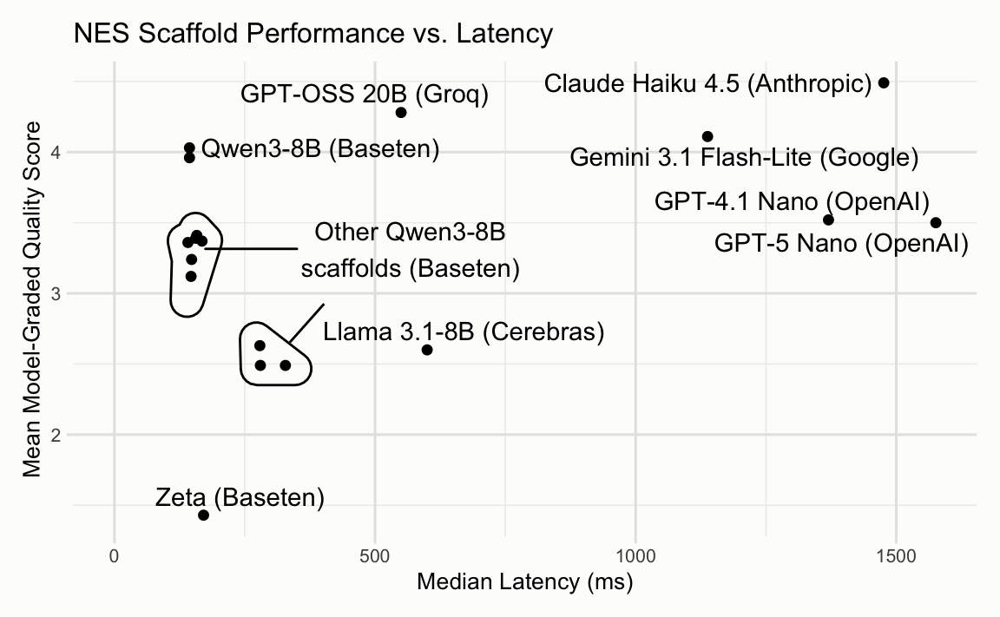
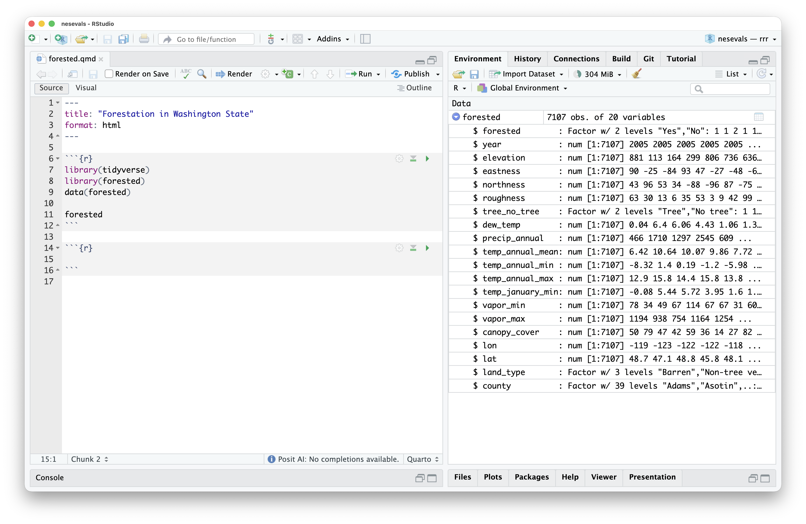

I just loaded some data from the forested package into my R environment. It has a bunch of measurements of forest attributes across Washington State:

Let’s add a lon/lat plot of the data to this Quarto document:
In this video, I’m often just typing a couple characters and then waiting for Next Edit Suggestions (NES), part of our new Posit AI service. You might notice a couple things:
- It doesn’t hallucinate dataset or column names.
- It doesn’t f*** up the formatting of the Quarto document.
- The suggestions arrive very quickly.
- Broadly, the suggestions are quite reasonable.
At this point, 3) and 4) are table stakes for IDE next edit suggestions (aka supercomplete or AI autocomplete). 1) and 2), though, will be quite unfamiliar to those who have used NES in other IDEs before. I’m going to write a bit about how this system works and how it came to be.
Table stakes: reasonable suggestions at blistering speed
Loosely, IDEs’ Next Edit Suggestions features look like this:
- Rent out a GPU and put a small (8B or so) model on it.
- As your users type, take a snapshot of the file every few seconds and record the changes to generate an “edit history.”
- On request (either automatically after some typing delay or through an explicit request from a keyboard command), provide the state of the file as well as some log of those edits to the model. A few thousand input tokens.
- Have the model reply with the change that it wants to make. Output formats vary here, but usually a couple hundred output tokens.
Now, which small model do you use? How do you present the “edit history” to that model? How do you combine all of those pieces of the prompt together? How does the model specify the output format?
To help us answer this question, I put together an open-source evaluation called nesevals. Structured as an R package, the eval allowed us to try out a bunch of different models, input formats, and output formats. The raw data is available in the package, but we’ll walk through a plot that condenses a lot of the lessons learned onto two axes.
A close read
We’ll walk through what one Next Edit Suggestion looks like using this forested example. With NES turned to “Automatic”, these are firing off every second or two as I type.
The system prompt also includes a worked example; instead of repeating it here, we’ll just talk through the same sections that appear in the user prompt.
The user prompt is composed of four sections:
- File context, showing a large portion of the document the user is editing.
- The edit history, displaying the edits they’ve recently made to the document.
- Variables from the user’s active computational session.
- The region to apply an edit inside of. This is 5 lines before and after the user’s cursor maximum.
We send that all off to the model and, hopefully, get a rewritten version of the excerpt in reply.
If you’re interested in checking out Posit AI, see the release post and the product page. If you want to poke at this data yourself, check out the open-source nesevals package.